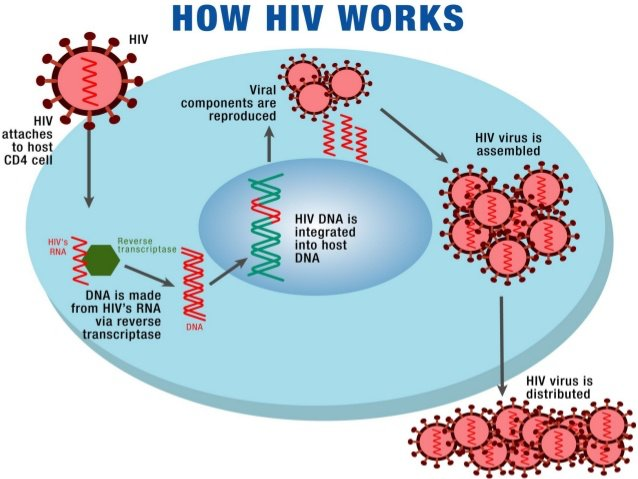
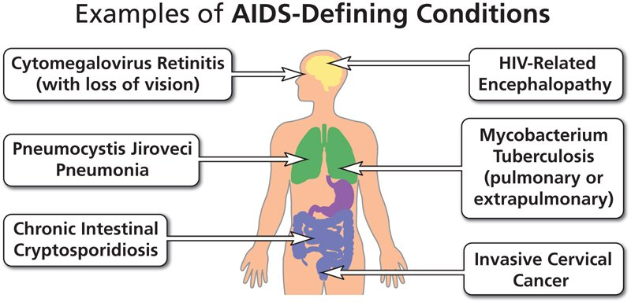

Week 1
HIV & Antiretroviral Therapy (ART)
HIV & AIDS — the Basics
| Term | Meaning |
|---|---|
| HIV | Human Immunodeficiency Virus — a retrovirus that invades the body and destroys CD4 T cells. |
| Retrovirus | A virus that carries only RNA (no DNA) and uses reverse transcriptase to make a DNA copy of itself inside a host cell. |
| HIV-1 | The type seen in U.S. practice. Discovered first; still the most prevalent type worldwide. |
| HIV-2 | A mutated, less pathogenic version — confined largely to West Africa, not commonly seen in the U.S. |
| AIDS | Acquired Immune Deficiency Syndrome, caused by HIV. Everyone with AIDS has HIV, but not everyone with HIV has AIDS — it develops from an untreated HIV infection or from severe immune dysfunction that builds up over years. |
Who's Most Affected in the US
- About 1.1 million people are newly infected annually in the U.S., and that number has been trending up.
- South Africa has the highest HIV prevalence in the world — it's believed to be where the virus originated.
- 76% of adults and adolescents with HIV in the U.S. are men.
- Black men have the highest rates of new HIV infections; Black men who have sex with men account for the most new and existing infections. ("Men who have sex with men," or MSM, is the clinical term used here — it describes risk by behavior rather than identity, and avoids the stigma that can come with other labels.)
- New cases are also increasing among women — risk assessment shouldn't discount any group, especially in school health or other preventive-care settings.
How HIV Attacks the Immune System
The HIV Life Cycle
- The virus binds to the CD4 receptor on a host cell — mainly T lymphocytes, though it can also attack monocytes and macrophages.
- It fuses with the cell membrane and enters the cell.
- Inside, it releases reverse transcriptase, which makes a DNA copy of the virus's own RNA.
- That new viral DNA is inserted into the host cell's own genetic material by another enzyme, HIV integrase.
- The infected cell's machinery is hijacked to direct the synthesis and assembly of more virus.
- New viral copies are released to go infect more CD4 cells, and the cycle repeats.

CD4 T cells are responsible for cell-mediated immunity — the body's long-term immune "memory." Once HIV has taken over enough of them, that memory function is gone and the immune system collapses, leaving the person vulnerable to opportunistic infections and certain cancers.
Because the viral DNA becomes part of the host cell's own DNA, a person is infected for life — HIV cannot be fully cleared, only suppressed to very low levels. The body does form anti-HIV antibodies, which is how infection is detected on a test, but they aren't effective at neutralizing the virus.
Stages of HIV Infection
| Stage | What's Happening |
|---|---|
| Acute (Early) Infection | Rapid viral replication turns CD4 cells into "HIV factories." About 40–60% of infected people don't notice or can't identify symptoms, since they're nonspecific. The person is infectious from day one — even before symptoms appear. Seroconversion (when antibodies become detectable) happens during this stage, and the person is highly infectious once it occurs. |
| Clinical Latency (Chronic) | Viral levels stabilize as the body suppresses the "factories"; some healthy CD4 cells remain. Asymptomatic or only mildly symptomatic, with or without treatment. Untreated, this stage lasts about 3–12 years; with effective treatment, it can be maintained indefinitely. |
| Symptomatic HIV / AIDS | CD4 count continues a persistent decline over time until the bone marrow can no longer keep up, eventually reaching AIDS-defining criteria. |
CD4 count and viral load move inversely: a higher CD4 count means a healthier immune system, a lower viral load means less circulating virus, and as one drops the other tends to rise. In a treated patient, viral load can stay very low or undetectable while CD4 count remains around 500–600; in an untreated patient, CD4 count trends down toward the AIDS-defining threshold of 200.
The three stages above are the disease-progression picture. The CDC also uses a more granular surveillance staging system, based directly on CD4 count/percentage or an AIDS-defining condition, from the course slides:
| Stage | CD4 Count | CD4 % | Clinical Evidence |
|---|---|---|---|
| Stage 0 | Early HIV infection | — | |
| Stage 1 | ≥500 cells/mm³ | ≥26 | No AIDS-defining condition |
| Stage 2 | 200–499 cells/mm³ | 14–25 | No AIDS-defining condition |
| Stage 3 | <200 cells/mm³ | <14 | or documentation of an AIDS-defining condition |
| Stage Unknown | No data | No data | and no information on AIDS-defining conditions |
CD4 percentage is used only when no CD4 count is available. (2014 CDC case definition for HIV infection among adolescents and adults.)
Symptoms during acute infection (or as the disease progresses) look a lot like the flu or COVID: fever, sore throat, swollen lymph nodes, rash, muscle aches, night sweats, mouth sores, chills, and fatigue. Because they're so nonspecific, testing is driven by assessing a patient's risk factors and lifestyle — not by symptoms alone.
AIDS-Defining Criteria
A diagnosis becomes AIDS, rather than just HIV, either way: a CD4 count under 200 — regardless of symptoms — or the presence of an AIDS-defining condition, regardless of CD4 count.
AIDS-Defining Conditions to Memorize
- Kaposi sarcoma
- Wasting syndrome
- Invasive (pervasive) candidiasis
- Pneumocystis pneumonia (PCP)
- Tuberculosis (TB)
- Invasive cervical cancer
- HIV-related encephalopathy / AIDS dementia complex

Oral Manifestations & HIV-Associated Dementia
| Term | Detail |
|---|---|
| Oral Manifestations | Fungal, viral, bacterial, or cancerous oral problems appear as CD4 counts begin to drop — an early sign the immune system is struggling and a possible cue to reassess the treatment regimen. Includes oral hairy leukoplasia (on the side or top of the tongue) and a higher risk of periodontal disease. Teaching point: reinforce good oral care and encourage regular dental visits. |
| HIV-Associated Dementia | Also called AIDS dementia complex — cognitive symptoms of dementia. Historically affected about 40–60% of patients; far less common now with modern treatment. Thought to occur because HIV crosses the blood-brain barrier. It's considered an AIDS-defining illness. |
Transmission & Risk
| Route | Risk |
|---|---|
| Anal or Vaginal Sex, No Condom | High risk if one partner is HIV-positive. |
| Oral Sex | Very low to no risk. |
| Perinatal (Mother to Baby) | About 25–30% if the mother is untreated; less than 2% if she's treated. |
| Shared Injection Equipment | High risk — IV drug use, dirty needles. |
| Blood Transfusion / Organ Transplant | Possible, but rare now given current screening. |
Not Spread By
- Sharing a toilet seat
- Hugging
- Kissing or spit
- Other casual, non-fluid contact
Highest-risk group: men who have sex with men. Other major risk factors include injection drug use, unprotected heterosexual contact, perinatal exposure, and blood exposure. Transmission risk climbs with more frequent or longer contact, and with a higher viral load in the source person (volume, virulence, and concentration all matter) — which is often highest during the early, undiagnosed stage of infection.
| Healthcare Exposure | Risk |
|---|---|
| Face/Skin Splash With Body Fluid | Essentially zero risk, even if blood is present. |
| Mucous Membrane or Skin Contact | Very low risk, even with blood involved. |
| Needle Stick | Still under 1%. |
Regardless of how low the risk, any exposure still requires completing exposure paperwork/reporting, and post-exposure prophylaxis may be offered depending on the risk level.
Antiretroviral Therapy (ART)
The instructor was explicit here: individual drug names aren't required for the drug matrix, but exam questions will cover the generalizations and principles below — this is a fast-moving treatment area.
| Drug Class | What It Targets |
|---|---|
| Fusion Inhibitors | Block the virus from entering the cell. |
| CCR5 Antagonists | Also block viral entry, via the CCR5 co-receptor protein. |
| NRTIs | Nucleoside reverse transcriptase inhibitors — inhibit reverse transcriptase. |
| NNRTIs | Non-nucleoside reverse transcriptase inhibitors — also inhibit reverse transcriptase, working similarly to NRTIs. |
| Protease Inhibitors | Inhibit HIV protease. |
| Integrase Inhibitors | Inhibit HIV integrase. |
A typical ART regimen is three drugs: two NRTIs plus a third agent from a different class.
| Term | Detail |
|---|---|
| NRTI Mechanism | Inhibits reverse transcriptase, blocking HIV's ability to incorporate its RNA into the host cell's DNA. |
| NRTI Adverse Effects | Peripheral neuropathy, pancreatitis, lipoatrophy, and hepatic steatosis (liver effects). |
ART overall doesn't have many drug-drug interactions, which is a plus — but a three-drug regimen is still a lot for a patient to manage.
Treatment Principles
- Start therapy as soon as possible after diagnosis.
- The goal is to decrease viral load to an undetectable level, which gives the immune system a chance to recover and produce healthy, uninfected CD4 cells.
- Effectiveness is monitored with CD4 count and viral load.
- An undetectable viral load means effectively no risk of transmitting HIV to others — but the person is still considered HIV-positive.
PrEP & PEP
| Term | Detail |
|---|---|
| PrEP (Pre-Exposure Prophylaxis) | Ongoing antiretroviral medication (typically a combination pill) taken by an HIV-negative person in an ongoing relationship with an HIV-positive partner, to prevent acquiring HIV. Reduces transmission risk by more than 90%. Reserved for people with an ongoing, identified risk — clinics screen and interview first, since giving it out broadly would increase the risk of drug resistance. |
| PEP (Post-Exposure Prophylaxis) | Antiretroviral therapy started after a known or suspected high-risk exposure (a needle stick, unprotected sex with someone found to be HIV-positive, a high-risk healthcare exposure). Given for 28 days, with HIV testing done at 6 and 12 weeks. |
Self-Test Flashcards
Click a card to flip it and check your answer.
Practice Questions
NCLEX-style practice questions covering this page's highest-yield content. Choose your answer for each, then submit to see your score and rationales — the same 20 questions also live in the Build Your Own Exam question bank.